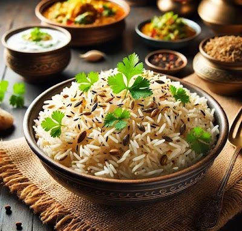

🍚 Jeera Rice

Description:
Jeera Rice is a simple, flavorful Indian rice dish tempered with cumin seeds.
It pairs beautifully with dals, curries, or kormas and is a staple in Indian households.
Prep Time:
⏱️ 20 minutes
Ingredients:
- 1 cup basmati rice
- 2 cups water
- 1 tbsp ghee or oil
- 1 tsp cumin seeds (jeera)
- 1 bay leaf (optional)
- 1 small green chili (slit) – optional
- Salt to taste
- Fresh coriander leaves for garnish
Instructions:
- Rinse the rice 2–3 times and soak for 20 minutes. Drain before cooking.
- Heat ghee in a pan. Add cumin seeds and let them splutter.
- Add bay leaf and green chili if using. Sauté for a few seconds.
-
Add the soaked rice and sauté gently for 1–2 minutes
without breaking the grains.
- Add water and salt. Stir once gently.
-
Cover and cook on low flame for 12–15 minutes
or until rice is fluffy and water is absorbed.
-
Let it rest for 5 minutes, fluff with fork,
and garnish with coriander leaves.
- Serve hot with dal, curry, or raita.